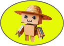

<ion-header [translucent]="true">
  <ion-toolbar color="light">
    <!-- Botón de volver hacia atrás -->
    <ion-buttons slot="start">
      <ion-button [routerLink]="['/']">
        <ion-icon name="arrow-back-outline"></ion-icon>
      </ion-button>
    </ion-buttons>
    <!-- Botón de volver hacia atrás -->
    <ion-title class="ion-text-center">Lista Proveedores</ion-title> <!-- Clase para centrar el título -->
  </ion-toolbar>
</ion-header>
<ion-content >
  <div class="bigimage">
    <ion-grid>
      <ion-row class="ion-text-center">
        <ion-col size="4" *ngFor="let proveedor of proveedoresFiltrados">
          <div class="profile-container">
            <ion-card class="profile-card">
              <div class="profile-details">
                
              </div>
              <ion-card-content class="profile-stats">
                <!-- el br es un apaño momentanio -->
                <ion-card-header>
                  <ion-card-title class="card-title">{{ proveedor.nombre }}<br/>
                     {{ proveedor.apellido }}</ion-card-title>
                </ion-card-header>
                <div class="card-section">
                  <ion-text>Calificación</ion-text>
                </div>
                <div>
                  <div class="card-rating">
                    <ion-text class="rating-value">4</ion-text>
                  </div>
                </div>
                <div class="card-section button-div" (click)="catalogo_producto()">
                  Productos
                </div>
              </ion-card-content>
            </ion-card>
          </div>
        </ion-col>
      </ion-row>
    </ion-grid>
  </div>
</ion-content>


<ion-footer>
  <ion-toolbar>
    <ion-buttons slot="start">
      <ion-button (click)="toggleSearchBar()" style="background-color: yellow; border-radius: 50%;">
        <ion-icon name="search-outline" style="color: black;"></ion-icon>
      </ion-button>
    <ion-searchbar *ngIf="showSearchBar" placeholder="Buscar..." (ionInput)="onSearch($event)" style="margin: 10px;"></ion-searchbar>
    </ion-buttons>
    <div class="center-button">
      <ion-button style="--padding-start: 0; --padding-end: 0; --border-radius: 50%; width: 40px; height: 40px;">
        
      </ion-button>
    </div>
    <ion-buttons slot="end" (click)="navigateToLogin()">
      <ion-button style="background-color: yellow; border-radius: 50%;">
        <ion-icon name="person-outline" style="color: black;"></ion-icon>
      </ion-button>
    </ion-buttons>
  </ion-toolbar>
</ion-footer>
